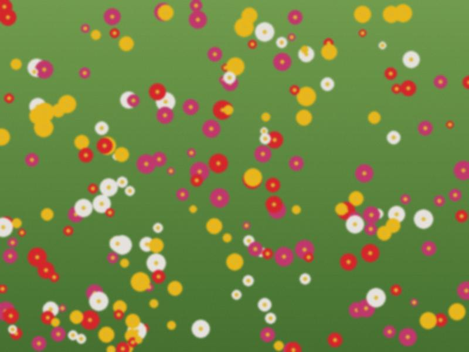

First of September
01 September 2018 · School

Eldiyar with the asters from our yard, in front of the school.Eldiyar went to school today. White shirt, black trousers, the red bow for the teacher, a bouquet of asters from our yard because the flower seller on the corner wanted 15 som for a small one, which is a crime.
At the end of the line-up they read the names and he did not hear his own because he was looking at the flag. Bakytgul Jumabekovna called him again, quietly, and he ran. I was so proud and so stupid, I cried again into Dastan's sleeve.
♥ 31
1 comments
Of course you cried. We all do. Your sewing machine will be busy with the uniforms now, I think.
Comments are closed.